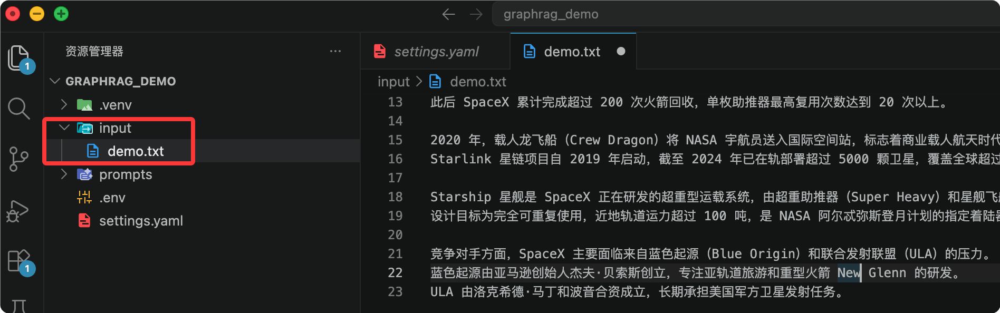

GraphRAG入門チュートリアル
GraphRAGは、マイクロソフトリサーチがオープンソース化した、構造化・階層化された検索拡張生成（RAG）システムです。従来のRAGがプレーンテキストのベクトル検索を使用するのとは異なり、GraphRAGはまず大規模言語モデルを使って元のドキュメントからエンティティと関係を抽出し、知識グラフを構築してから、グラフ構造に基づいて検索とQAを行います。
本チュートリアルは初心者向けで、インストールから始めて、以下の全フローを完全に進めます。ドキュメント → 知識グラフ → クエリQAモデルにはqwen-plus、EmbeddingにはAlibaba Cloud通義のtext-embedding-v4。

GraphRAGとは
GraphRAGを理解するには、まず従来のRAGより優れている点を理解する必要があります。
従来のRAGの限界
従来のRAG（Baseline RAG）のワークフローは、ドキュメントを小さなチャンクに分割 → ベクトルを生成 → 質問が来たらベクトル類似度で最も関連する数チャンクを検索 → モデルに渡して回答を生成する、というものです。
この方法は「精密検索」タイプの問題には効果的ですが、次の2つのシナリオではパフォーマンスが低下します。
- ドキュメント横断的な関連推論：回答が異なるドキュメントに散らばった情報を結び付ける必要がある場合、ベクトル類似度はそのような「関係」を表現できません。例：「A社のCEOとB社の創業者にはどのような接点がありますか？」
- 全体的な要約の問題：質問がコーパス全体のマクロな要約を求める場合、いくつかのテキスト断片では全体像をカバーできません。例：「この一連の財務報告書の中で最も重要なリスクポイントは何ですか？」
GraphRAGがこの2つの問題をどう解決するか
GraphRAGの核となる考え方は次のとおりです。テキストチャンクを直接検索するのではなく、まず知識グラフを構築し、そのグラフ構造に基づいて検索します。。
プロセス全体は2つの段階に分かれます。
| 段階 | 処理内容 | 出力内容 |
|---|---|---|
| インデックス（Index） | LLMを使用してドキュメントを読み取り、エンティティ（人物、場所、組織など）と関係を抽出して知識グラフを構築し、その後Leidenアルゴリズムでグラフを階層クラスタリングし、各コミュニティの要約を生成します。 | 知識グラフ＋コミュニティ要約＋ベクトルインデックス |
| クエリ（Query） | ユーザーが質問したとき、質問のタイプに応じて異なる検索戦略を選択し、グラフデータ、コミュニティ要約、元のテキスト断片をまとめてLLMコンテキストに注入して回答を生成します。 | 出典根拠付きの構造化された回答 |
GraphRAGのインデックス段階では、多数のLLM APIを呼び出し、各テキストに対してエンティティ抽出と要約を行うため、Token消費は従来のRAGよりはるかに多くなります。。初回使用時は、まず小さなドキュメント（数千文字以内）でプロセスをテストし、問題がないことを確認してから大規模なコーパスを処理することをお勧めします。
4つのクエリモードの比較
| クエリモード | 検索戦略 | 適した問題タイプ | リソース消費 |
|---|---|---|---|
| Global Search | Map-Reduceですべてのコミュニティ要約を走査 | 全体的・要約的な問題。例：「このドキュメント群の中心テーマは何か」 | 高（LLMを並行して複数回呼び出し） |
| Local Search | 関連エンティティから出発し、隣接ノードと関連テキストを拡張 | 特定のエンティティに関する問題。例「ある人物の主な関係ネットワーク」 | 中 |
| DRIFT Search | Local Search＋コミュニティ情報による反復的な追加質問 | 広い文脈を必要とするエンティティ関連の問題。深さと広さを両立 | 中高 |
| Basic Search | 標準ベクトル類似度（従来のRAGと同じ） | 単純な精密検索。効果比較用 | 低 |
環境要件
始める前に、お使いの環境が以下の条件を満たしていることを確認してください。
| 依存関係 | バージョン要件 | 説明 |
|---|---|---|
| Python | 3.10 ~ 3.12 | 公式サポート範囲。3.13は当面サポートされていません |
| pip | 最新版 | まずpip install --upgrade pip |
| Alibaba Cloud百炼 APIキー | — | 在 bailian.console.aliyun.com/申請 |
| ディスク容量 | ≥ 2GB | インデックス生成物（Parquetファイル、ベクトルストア）は多くの容量を占有します。 |
インストール
GraphRAGはPyPIで公開されています。システム環境を汚さないよう、Python仮想環境へのインストールを推奨します。
プロジェクトディレクトリを作成し、仮想環境を初期化する
mkdir graphrag_demo cd graphrag_demo python -m venv .venv
以下のコマンドも使用できます：uvコマンドを使用してPythonバージョンを指定します：uv venv --python 3.12
仮想環境をアクティベートする
macOS / Linux：
source .venv/bin/activate
Windows：
.venv\Scripts\activate
GraphRAGをインストールする
pip install graphrag
インストール完了後に検証します：
graphrag --help
いくつかのgraphragコマンド情報が出力され、出力は次のようになります：

GraphRAGは自動的にLiteLLM、LanceDB、pandas、numpyなどの依存関係をインストールします。初回インストールには時間がかかる場合があります（通常1〜3分）。お待ちください。
ワークスペースを初期化する
実行：graphrag initコマンドの実行により、GraphRAGは現在のディレクトリに設定ファイルとディレクトリ構造を生成します。
graphrag init
モデルの設定を求められます。そのままEnterキーでデフォルトにしておき、後で変更します：
Specify the default chat model to use [gpt-4.1]: Specify the default embedding model to use [text-embedding-3-large]:
初期化時にデフォルトのChatモデルとEmbeddingモデルの入力を求められますが、そのままEnterキーでスキップして、後で手動で変更します。settings.yaml。
初期化が完了すると、ディレクトリ構造は次のようになります：
graphrag_demo/ ├── .env # 存放 API Key 环境变量 ├── settings.yaml # 核心配置文件 ├── input/ # 存放待处理的文本文件 ├── output/ # 索引产物输出目录（自动生成） └── prompts/ # Prompt 模板目录（自动生成）
GraphRAGのマイナーバージョンをアップグレードするたびに、再実行することをお勧めします。
graphrag init --force設定形式を更新してください。そうしないと、設定構造の変更により実行エラーが発生する可能性があります。このコマンドは既存のsettings.yamlとpromptsを上書きするため、先にバックアップすることをお勧めします。
テストドキュメントを準備する
GraphRAGは.txt、.csv、.json形式のドキュメントをサポートしており、処理対象の全ファイルはinput/ディレクトリに配置します。
公式推奨のテストドキュメントであるチャールズ・ディケンズの『クリスマス・キャロル』をProject Gutenbergから直接ダウンロードします：
curl https://static.jyshare.com/download/pg24022.txt -o ./input/book.txt
ネットワークに接続できない場合は、自分で中国語のテストテキストを作成することもできます。内容が豊富であるほど（多数の人物、場所、出来事の関係を含む）、GraphRAGの知識グラフの効果がより顕著になります：
ファイルはinputディレクトリに配置し、ファイル名はdemo.txt：
SpaceX 太空探索技术公司成立于 2002 年，由埃隆·马斯克（Elon Musk）在美国加利福尼亚州霍桑市创办。 公司目标是大幅降低太空运输成本，最终实现人类移民火星。 马斯克早年联合创立了 PayPal，2002 年以 15 亿美元出售给 eBay，随后将个人资产投入 SpaceX。 联合创始人中，汤姆·穆勒（Tom Mueller）担任推进系统首席设计师，主导了 Merlin 和 Raptor 发动机的研发。 格温·肖特维尔（Gwynne Shotwell）于 2002 年加入，2008 年起担任总裁兼 COO，负责公司日常运营和商业拓展。 2008 年，猎鹰 1 号（Falcon 1）在经历三次失败后首次成功入轨，成为首个由私营公司研制的液体轨道火箭。 2010 年，猎鹰 9 号（Falcon 9）首飞成功，同年龙飞船（Dragon）完成首次商业发射与回收。 2012 年，龙飞船成为首个对接国际空间站的商业航天器。 2015 年 12 月，猎鹰 9 号一级火箭首次实现陆地垂直回收，开创了火箭重复使用的新纪元。 此后 SpaceX 累计完成超过 200 次火箭回收，单枚助推器最高复用次数达到 20 次以上。 2020 年，载人龙飞船（Crew Dragon）将 NASA 宇航员送入国际空间站，标志着商业载人航天时代的开始。 Starlink 星链项目自 2019 年启动，截至 2024 年已在轨部署超过 5000 颗卫星，覆盖全球超过 60 个国家和地区。 Starship 星舰是 SpaceX 正在研发的超重型运载系统，由超重助推器（Super Heavy）和星舰飞船组成， 设计目标为完全可重复使用，近地轨道运力超过 100 吨，是 NASA 阿尔忒弥斯登月计划的指定着陆器。 竞争对手方面，SpaceX 主要面临来自蓝色起源（Blue Origin）和联合发射联盟（ULA）的压力。 蓝色起源由亚马逊创始人杰夫·贝索斯创立，专注亚轨道旅游和重型火箭 New Glenn 的研发。 ULA 由洛克希德·马丁和波音合资成立，长期承担美国军方卫星发射任务。

qwen-plusとEmbeddingモデルを設定する
これはこのチュートリアル全体で最も重要なステップです。変更する必要があるのは.env 和 settings.yaml2つのファイルです。
ステップ1：APIキーを設定する
開きます：.envファイルにあなたのAPIキーを入力してください：
例
# Alibaba Cloud百炼 APIキー
DASHSCOPE_API_KEY=sk-your-dashscope-api-key-here
ステップ2：settings.yamlを変更する
開きます：settings.yaml内容全体を次の設定に置き換えます。
GraphRAG 2.xはLiteLLMを使用して各社のモデルを統一的に呼び出します。model_provider: openai組み合わせることでapi_baseリクエストを任意のOpenAI互換インターフェースに転送できます：
completion_models:
default_completion_model:
model_provider: openai
model: qwen-plus # 中文抽取稳定，成本低于 qwen-plus
auth_method: api_key
api_key: ${DASHSCOPE_API_KEY}
api_base: https://dashscope.aliyuncs.com/compatible-mode/v1
call_args:
temperature: 0 # 提高结构化稳定性
max_tokens: 4096
retry:
type: exponential_backoff
max_retries: 5
base_delay: 2
embedding_models:
default_embedding_model:
model_provider: openai
model: text-embedding-v4 # 通义向量模型
auth_method: api_key
api_key: ${DASHSCOPE_API_KEY}
api_base: https://dashscope.aliyuncs.com/compatible-mode/v1
retry:
type: exponential_backoff
max_retries: 5
input:
type: text
input_storage:
type: file
base_dir: input
chunking:
type: tokens
size: 600 # 中文推荐 500~800
overlap: 100
encoding_model: o200k_base
output_storage:
type: file
base_dir: output
reporting:
type: file
base_dir: logs
cache:
type: json
storage:
type: file
base_dir: cache
vector_store:
type: lancedb
db_uri: output/lancedb
embed_text:
embedding_model_id: default_embedding_model # 注意不要带逗号
batch_size: 10 # 百炼 embedding 单次最多10条
batch_max_tokens: 6000
concurrency: 1 # 避免并发触发限流
extract_graph:
completion_model_id: default_completion_model
entity_types: [] # 自动识别实体
max_gleanings: 3 # 提高关系补抽成功率
summarize_descriptions:
completion_model_id: default_completion_model
max_length: 500
cluster_graph:
max_cluster_size: 20 # 降低社区数量
extract_claims:
enabled: false
community_reports:
completion_model_id: default_completion_model
max_length: 1500
max_input_length: 4000 # 防止生成阶段过慢
snapshots:
graphml: true # 导出图结构
embeddings: false
local_search:
completion_model_id: default_completion_model
embedding_model_id: default_embedding_model
top_k_entities: 10
global_search:
completion_model_id: default_completion_model
map_max_length: 500
reduce_max_length: 1500
QwenのJSON出力について：GraphRAGはエンティティ抽出段階で、モデルが安定してJSON形式を返すことを必要とします。QwenはJSONモードをサポートしており、
temperature0に設定すると、出力の安定性がさらに向上し、解析失敗の確率が減ります。それでもJSON解析エラーが発生する場合は、試しにcall_argsに追加してくださいresponse_format: {type: json_object}。
インデックスを開始する
設定が完了したら、インデックスコマンドを実行すると、GraphRAGは自動的に読み取りますinput/ディレクトリ内のすべてのファイルを読み取り、qwen-plusを呼び出してエンティティ抽出、関係識別、要約生成を行い、最終的に完全な知識グラフを構築します。
graphrag index
次のような進捗出力が表示されます：
⠹ GraphRAG Indexer ├── Loading Input (text) - 1 files loaded ├── create_base_text_units ├── extract_graph │ └── Entity Extraction: 100%|████████████| 12/12 [02:34<00:00] ├── summarize_descriptions ├── cluster_graph ├── community_reports └── generate_text_embeddings All workflows completed successfully.
インデックスが完了すると、output/ディレクトリ内に一連のParquetファイルが生成されます：
| ファイル | 内容 |
|---|---|
entities.parquet | 抽出されたすべてのエンティティ（名前、タイプ、説明、ベクトル） |
relationships.parquet | エンティティ間の関係（ソースエンティティ、ターゲットエンティティ、関係の説明、重み） |
communities.parquet | Leidenクラスタリングによって生成されたコミュニティ（階層構造） |
community_reports.parquet | 各コミュニティの要約レポート（Global Searchの核となるデータ） |
text_units.parquet | 元のテキストブロック（Local Searchの参照ソース） |
lancedb/ | ベクトルデータベース。各種エンティティとテキストブロックのベクトルを格納します。 |
インデックス時間の参考：数千字の中文ドキュメント（約10〜20個のテキストブロック）の場合、qwen-plusを使用すると約3〜10分かかります。10万字以上の大規模なドキュメントセットの場合は、数時間かかる可能性があります。最初に小さいドキュメントでフローを一通り実行してから、大規模なデータを処理することをお勧めします。
クエリを実行する
インデックスが完了すると、知識グラフに対してクエリを実行できます。GraphRAGはCLIとPython APIの2つの方法を提供します。
CLIクエリ
グローバル検索（マクロ的な問題に適しています）：
graphrag query "文档中涉及的主要组织和人物有哪些？它们之间有什么关系？"
ローカル検索（特定のエンティティに関する問題に適しています）。追加--method local：
graphrag query "SpaceX 公司的主要业务和合作伙伴有哪些？" --method local
DRIFT検索（深さと広さの両方を兼顾）：
graphrag query "埃隆·马斯克的职业背景和主要贡献是什么？" --method drift
基本ベクトル検索（従来のRAGとの比較）：
graphrag query "Starship 星舰的设计目标和能力是什么？" --method basic
Python APIクエリ
コード内でGraphRAGクエリを呼び出すため、アプリケーションへの統合に適しています。
例
# GraphRAG Python APIを使用してクエリを実行
import asyncio
from graphrag.api import GraphRagConfig, search
async def run_query():
# 設定ファイルをロード（現在のディレクトリからsettings.yamlを読み取る）
config = GraphRagConfig.from_yaml("settings.yaml")
# ── グローバル検索の例 ──────────────────────────────
print("=" * 60)
print("【Global Search】グローバルな問題")
print("=" * 60)
global_result = await search(
config=config,
query="ドキュメント内で言及されている主要な企業と人物の関係ネットワークはどのようなものですか？",
method="global", # Global Searchを使用
)
print(global_result.response)
print()
# ── ローカル検索の例 ──────────────────────────────
print("=" * 60)
print("【Local Search】特定のエンティティに関する問題")
print("=" * 60)
local_result = await search(
config=config,
query="SpaceXの創業チームの背景と主要製品は何ですか？",
method="local", # Local Searchを使用
)
print(local_result.response)
print()
# 検索されたソース情報を表示（オプション）
if hasattr(local_result, "context_data"):
entities = local_result.context_data.get("entities", [])
print(f"関連エンティティの検索数：{len(entities)}")
if __name__ == "__main__":
asyncio.run(run_query())
python query_demo.py
============================================================ 【Global Search】全局性问题 ============================================================ 根据文档内容，主要涉及以下公司和人物关系网络： **公司层面：** - SpaceX 公司：主要角色，覆盖商业发射、载人航天、卫星互联网三大方向 - NASA：重要合作伙伴，阿尔忒弥斯登月计划 Starship 着陆器供应商 - 蓝色起源 / 联合发射联盟：主要竞争对手 **人物层面：** - 马斯克（创始人）：PayPal 联合创始人，SpaceX CEO 兼首席工程师 - 汤姆·穆勒（联合创始人）：推进系统首席设计师，Merlin 和 Raptor 发动机之父 - 格温·肖特维尔：总裁兼 COO，负责公司商业运营 **关键关系：** SpaceX 与 NASA 于 2020 年建立战略合作关系， 三家公司（SpaceX、蓝色起源、ULA）在商业航天发射市场形成竞争格局... ============================================================ 【Local Search】针对特定实体的问题 ============================================================ SpaceX 公司成立于 2002 年，创始团队包括： - 马斯克：PayPal 联合创始人，SpaceX CEO 兼首席工程师，航天领域超二十年经验 - 汤姆·穆勒：推进系统首席设计师，主导 Merlin 和 Raptor 发动机研发 主要产品： 1. 猎鹰 9 号：全球首个实现垂直回收的轨道级火箭，已完成 200 次以上回收 2. Starship 星舰：超重型运载系统，近地轨道运力超 100 吨，完全可重复使用 检索到相关实体数量：12
プロンプト自動チューニング
GraphRAG公式は、自分のデータを処理する前に、まずPromptの自動チューニングを実行することを強く推奨しています。
自動チューニングでは、LLMにドキュメントの一部を読み取らせ、データ領域に特化したエンティティ抽出Promptを生成するため、知識グラフの構築品質が向上します。
graphrag prompt-tune --config settings.yaml --root . --language Chinese
チューニングが完了すると、prompts/ディレクトリ内のPromptファイルが自動的に更新されます。ドキュメントが中国語の場合は、...を追加します--language Chineseパラメータを追加すると、生成されるPromptも中国語になり、中国語エンティティ抽出の精度が向上します。
Promptのチューニング自体もLLMのTokenを消費します（少量のドキュメントに対してクイックインデックスを1回実行するのとほぼ同じです）。デフォルトのPromptを使い続けるのではなく、データセットを変更するたびに再チューニングすることをお勧めします。
よく使うCLIコマンド早見表
以下は、GraphRAGの日常的な使用で最も一般的なコマンドです。
| コマンド | 説明 |
|---|---|
graphrag init | ワークスペースを初期化して、...を生成します.env、settings.yaml、input/ |
graphrag init --force | 強制的に再初期化（バージョンアップ後に使用）。既存の設定を上書きします。 |
graphrag index | 对 input/ディレクトリのドキュメントに対して完全なインデックス処理を実行します |
graphrag index --resume | 前回の中断箇所からインデックスを再開（LLM呼び出しはキャッシュされ、Tokenを重複して消費しません） |
graphrag index --update | 増分インデックス。新しく追加されたドキュメントのみを処理します。 |
graphrag query "问题" | Global Searchクエリ（デフォルトモード） |
graphrag query "问题" --method local | Local Searchクエリ |
graphrag query "问题" --method drift | DRIFT Searchクエリ |
graphrag query "问题" --method basic | Basic Search（ベクトル検索） |
graphrag prompt-tune | Promptの自動チューニング（新しいデータセットを処理する前に実行することを推奨） |
settings.yamlの全フィールド説明
以下、settings.yamlで最もよく使われる設定項目を詳しく説明し、さらに調整しやすくします。
モデル関連
| フィールド | 型 | 説明 |
|---|---|---|
model_provider | string | モデルプロバイダー。OpenAI互換インターフェースを使用する場合は、...と入力しますopenai |
model | string | モデル名。Qwenの場合は、...と入力しますqwen-plus 或 qwen-max |
api_key | string | APIキー。...を使用することをお勧めします${ENV_VAR}環境変数を参照します |
api_base | string | APIエンドポイント。Qwenの場合は、https://dashscope.aliyuncs.com/compatible-mode/v1 |
call_args.temperature | float | 生成温度。インデックス段階では安定性を高めるために0に設定することを推奨 |
call_args.max_tokens | int | 1回の生成における最大Token数 |
retry.max_retries | int | リクエスト失敗時の最大再試行回数 |
チャンク関連
| フィールド | 説明 | 推奨値 |
|---|---|---|
chunking.size | 各テキストブロックの最大Token数 | 英語：1200〜1500；中国語：600〜1000 |
chunking.overlap | 隣接するブロック間の重複Token数。エンティティが境界で途切れるのを防ぎます。 | 50~150 |
chunking.type | tokens（Token単位で分割）またはsentence（文単位で分割） | 通常は...を使用しますtokens |
エンティティ抽出関連
| フィールド | 説明 | 推奨 |
|---|---|---|
extract_graph.entity_types | モデルに重点的に抽出するエンティティタイプのリストを伝えます | 自身のビジネス領域に合わせてカスタマイズします。例：person, company, product, technology |
extract_graph.max_gleanings | 各テキストブロックに対して最大で何回追加質問するか（追加質問により再現率は向上しますが、より多くのTokenを消費します） | コストを重視する場合は1、品質を追求する場合は2に設定します |
よくある質問
インデックス作成が途中で失敗したらどうすればよいですか？
GraphRAGは毎回のLLM呼び出しの結果をキャッシュします。失敗したら、直接再実行しますgraphrag index、正常に処理されたテキストブロックはキャッシュから読み取られるため、Tokenを重複して消費しません。
特定のステップから再開したい場合は、...を使用します--resumeパラメータ：
graphrag index --resume
JSON解析エラーが発生した場合の対処法は？
エンティティ抽出段階では、モデルに厳密にJSON形式で返すよう要求します。もし...が発生した場合JSONDecodeError、以下の方法を試すことができます：
- 在
call_argsに追加しますresponse_format: {type: json_object}（モデルがこのパラメータをサポートしている必要があります） - 将
temperature0に設定します - 将
max_gleanings0に設定します（追加質問を減らし、エラー発生確率を下げます） - 実行します
graphrag prompt-tunePromptを再チューニングして、モデルに出力形式をよりよく認識させます
Global SearchとLocal Searchのどちらを選ぶべきですか？
| 質問タイプ | 推奨モード | 例 |
|---|---|---|
| 要約的、全体的 | Global Search | "このドキュメント群の核心的なテーマは何ですか？""すべての人物関係ネットワークの全体像" |
| 特定のエンティティ向け | Local Search | "マスクの経歴は？""ファルコン9ロケットの主な技術的特徴" |
| 深さと広さの両方が必要な場合 | DRIFT Search | "ある人物と周囲のエコシステムとの関連分析" |
| 単純で正確な検索 | Basic Search | "SpaceXは何年に設立されましたか？" |
Token消費が多すぎる場合の制御方法は？
- 将
chunking.size適切に大きく設定します（テキストブロックが少ないほどLLM呼び出しが少なくなります） - 将
extract_graph.max_gleanings0または1に設定します - 在
entity_typesには、ビジネスに最も関連するエンティティタイプのみを保持します - インデックス段階ではより安価なモデルを使用し、クエリ段階では必要に応じてより高性能なモデルに切り替えます
GraphRAGは「非対称モデル構成」戦略を提供します：
completion_modelsに複数のモデルを定義し、インデックス段階ではコストの低いモデルを使用し、クエリ段階では重要なクエリに対してより高性能なモデルを使用することで、コストと品質のバランスを取ります。
中国語ドキュメントをどう処理しますか？
中国語のドキュメントを処理する際、以下の点に注意する必要があります：
- 確認します
input.encoding: utf-8（デフォルトでUTF-8です） - 小さく設定します
chunking.size（中国語の文字は情報密度が高いため、600〜1000 Tokenで十分です） - 実行します
graphrag prompt-tune --language Chinese中国語のPromptを生成します entity_types中国語特有のタイプを適宜追加できます。例：government_agency（政府機関）、policy（政策）
関連資料
| トピック | 説明 | リンク |
|---|---|---|
| 公式完全ドキュメント | すべての設定項目の詳細な説明を含む | microsoft.github.io/graphrag |
| 設定リファレンス | settings.yaml 全フィールド説明 | microsoft.github.io/graphrag/config/yaml/ |
| モデル選定ガイド | 各種LLMへの接続方法（LiteLLMの使い方を含む） | microsoft.github.io/graphrag/config/models/ |
| クエリエンジン詳細解説 | 4つのクエリモードの原理とパラメータチューニング | microsoft.github.io/graphrag/query/overview/ |
| Prompt チューニングガイド | 自動チューニングと手動チューニングのPromptの完全な説明 | microsoft.github.io/graphrag/prompt_tuning/overview/ |
| 可視化ガイド | 公式ツールを使用した知識グラフの可視化 | microsoft.github.io/graphrag/visualization_guide/ |
| GraphRAG 論文 | マイクロソフトリサーチの原著論文、基本原理の理解 | arxiv.org/pdf/2404.16130 |
クリックしてノートを共有
<p style="font-size:14px;">ノートはこの記事の内容の拡張である必要があります！</p><br> <p style="font-size:12px;"><a href="../tougao.html" target="_blank">記事投稿はこちらをクリック</a></p> <p style="font-size:14px;"><a href="../w3cnote/runoob-user-test-intro.html" target="_blank">登録招待コードの取得方法</a></p> <h3 class="text-muted"><i class="fa fa-info-circle" aria-hidden="true"></i> ノートを共有する前に<a href=";.html" class="runoob-pop">ログイン</a>が必要です！</h3> <p><a href="../w3cnote/runoob-user-test-intro.html" target="_blank">登録招待コードの取得方法</a></p>